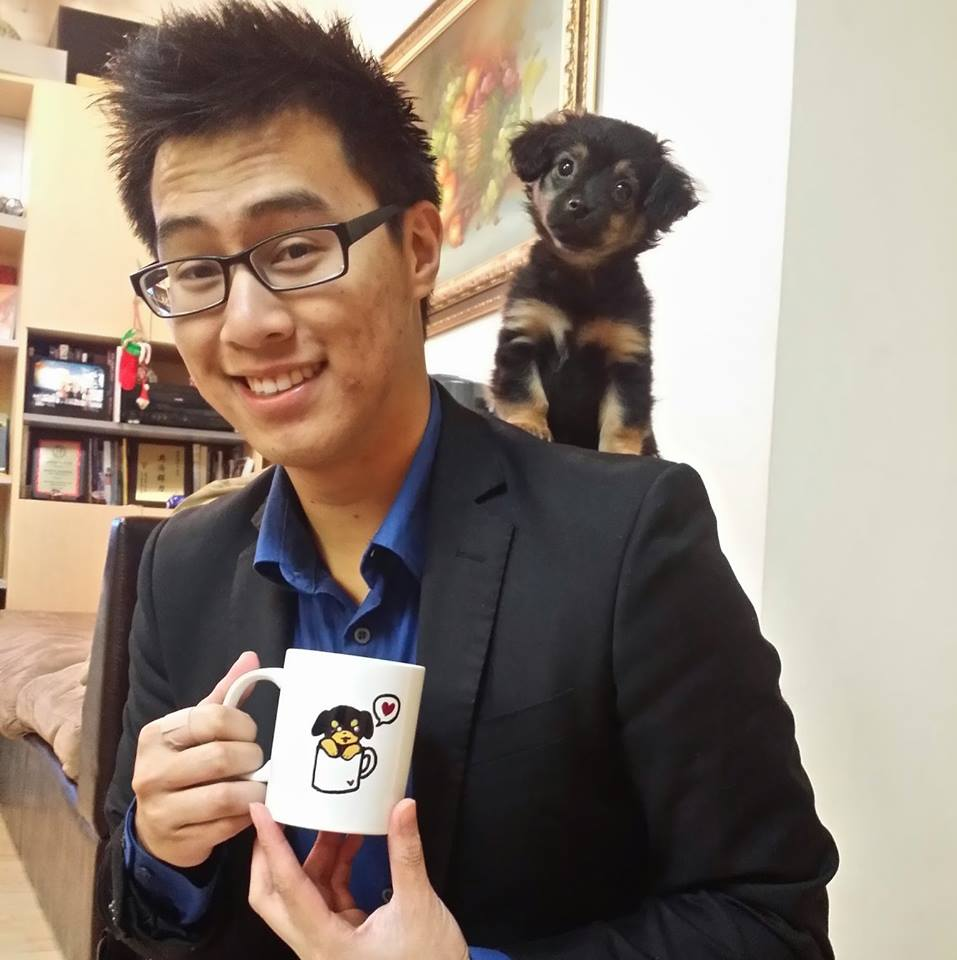

AmiiboDex Team
Tony Ly
Contact Info:
Email: t2ly@ucsd.edu
Phone: (626) 321-3218
I am a fourth-year Computer Science major at the Univserity of California, San Diego. My goal in life is to have a house full of puppies and not having to look at the price of food when ordering at a restaurant. I'm a big fan of anime and good food. Programming is cool I guess.
Mark Santa Presca

Contact Info:
Email: msantapr@ucsd.edu
Phone: (951) 764-9464
I study Computer Science at UCSD, and I love to travel and experience new foods and culture! When it comes to life outside the library and school, I'm a big fan of video games and anime as well as going to the gym. If there's one thing that would make my life complete, it would be to see Kobe Bryant in person.
Alvin Yan

Contact Info:
Email: apyan@ucsd.edu
Phone: (626) 500-7523
I am a fourth-year Computer Science major.